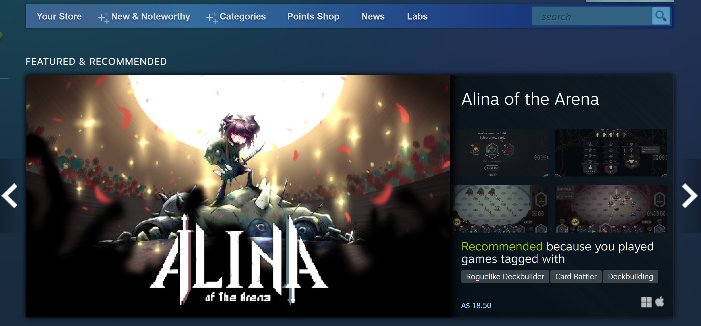

-
Spend two minutes with the experience and list all of your actions in granular detail.
- First I looked at the "featured and recommended" box
- I clicked through using the tabs at the side of the box to see if there was anything I was interested in
- Finding nothing I'm interested in I then click the wishlist button to navigate to the wishlist page to see if any games I was previously interested in were on sale
- I scrolled down the wishlist - I only pay attention to see if the differently coloured text box is present indicating a sale - I don't bother reading any other information without seeing that first
- I notice one game I'm interested in is on sale
- I click the name of the game that's on sale so I can purchase it, which takes me to that game's specific steam page
- I then scrolled down that page and clicked the add to cart button which took me to the "your shopping cart" page where I'm given the choice of two buttons, "purchase for yourself" and "purchase as a gift
- I clicked "purchase for yourself" and was taken to the payment method page where I selected a method from a drop down menu box before hitting the continue button
- This then takes me to the "review purchase" page where I can see all the details I have just entered - before I can finish the purchase I need to tick a checkbox saying I agree to the terms of the "Stem Subscriber Agreement"
- I tick the check box without reading the agreement and then click the purchase button which takes me to the "thank you for your purchase!" page, where I can select links to install the game through my steam app, however I click the "return to the store" button
- Once it had loaded I scrolled down the front page and looked through the other special offers - clicking through the different tabs in the same way that I did for the "featured and recommended" box
- Not seeing anything I'm interested in I continue to scroll down the page to look at the "new and trending" list
- Here I am able to hover my cursor over the top of each game in the list, which will reveal several screen shots of the game as well as some of it's tagged categories
- I notice there's a game I'm interested in that has just been released so I click through to it's steam store page
-
What was the first thing you paid attention to when interacting with the experience?

The first thing I looked at was the featured and recommended box on the page as shown above.
-
What did you spend the most time engaging with?
I spent the most time with the wishlist page - while I was scrolling I was scanning to see if any of the games I was interest in were on sale.
-
What was the most common action in your two minute interaction with the experience?
Scrolling and scanning the page for new information.
-
What is your impression of the intended primary goal of the interactive experience?
To encourage purchasing of video games from the store.
-
How does the experience communicate it's primary goal?
The size and positioning prominence that "special offers" gets on the main page - taking up the dominant part of the landing page, with distinct colour and contrast used to highlight games that are on sale (including some with a countdown ticker).
-
What is your impression of the intended length of a single interaction and how often you are intended to interact with the experience?
I think it probably depends on the intended goal, certainly I was able to quickly scan the sales and new releases in under two minutes - however if I was purchasing one or multiple games the length could be upwards of five minutes, due to having to process each games purchase insectionidually through several different pages. I think the store is designed for me to interact with it anywhere between several times a week to daily, due to the way it updates sales and featured games in an almost constant rotation. It's a fine balance with sales, they need to be short enough to allow regular change but also long enough that people don't feel "cheated" by missing one.